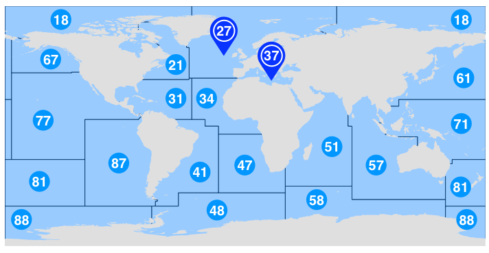

Addon fcd
Model fcd.lot
FCD Lot
FCD FAO Zone
FCD FAO Subzone
Link:
Zonas pesqueras

Área 18: océano Ártico
Área 21: sector noroccidental del océano Atlántico
Área 27: sector nororiental del [1] océano Atlántico
Área 31: sector occidental del [2] océano Atlántico
Área 34: sector centro-oriental del [3] océano Atlántico
Área 37: mar Mediterráneo y mar Negro
Área 41: sector suroccidental del océano Atlántico
Área 47: sector suroriental del océano Atlántico
Área 48: sector antártico del océano Atlántico
Área 51: sector occidental del océano Índico
Área 57: sector oriental del océano Índico
Área 58: sector antártico y meridional del océano Índico
Área 61: sector noroccidental del océano Pacífico
Área 67: sector nororiental del océano Pacífico
Área 71: sector centro-occidental del océano Pacífico
Área 77: sector centro-oriental del océano Pacífico
Área 81: sector suroccidental del océano Pacífico
Área 87: sector suroriental del océano Pacífico
Área 88: sector antártico del océano Pacífico